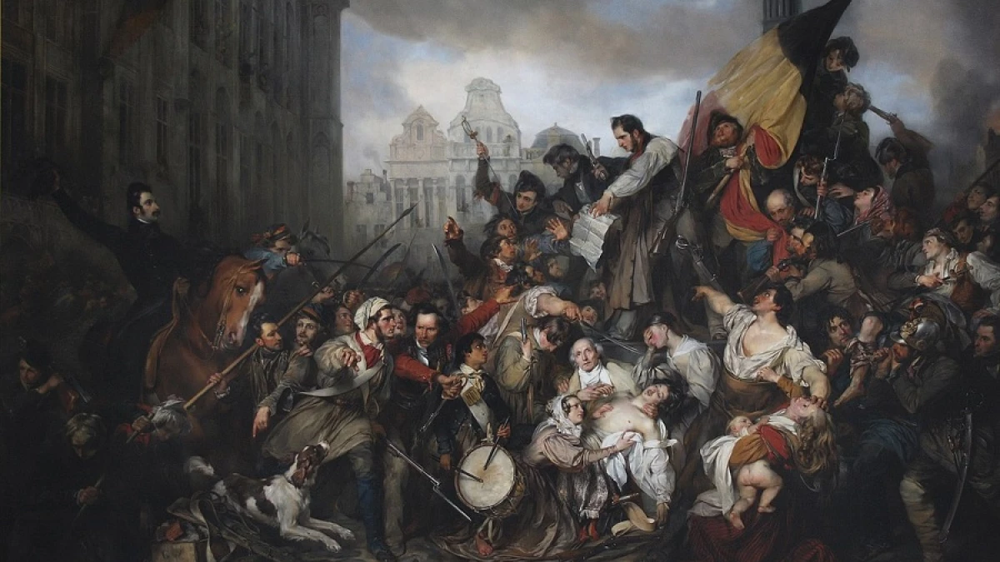
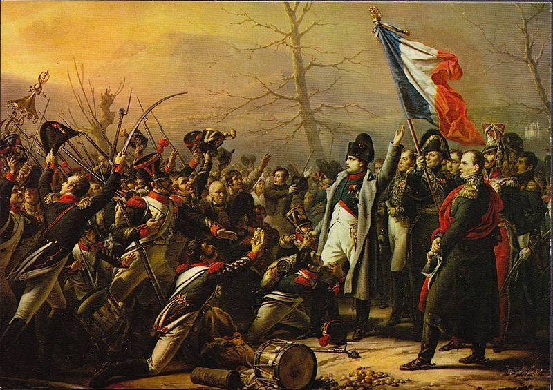
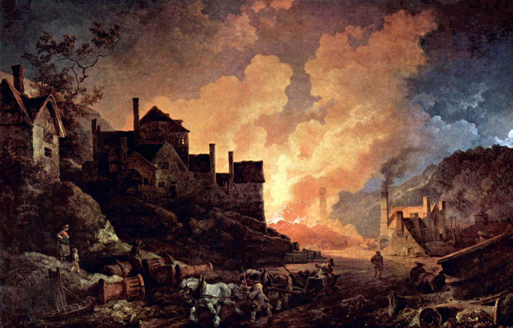
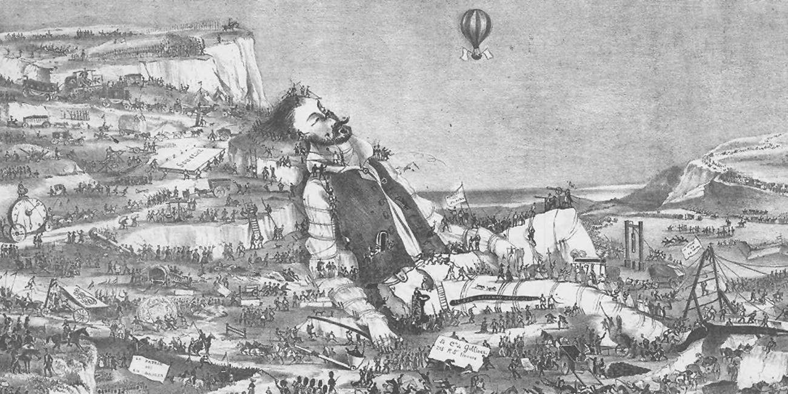

Mundo post-napoleónico, Revolución Industrial y nuevas ideologías
**Eje temático: Utopías sociales, Romanticismo y Nacionalismo (1815 – 1848).**
PREGUNTA HISTÓRICA CENTRAL
¿De qué manera la tensión entre el orden restaurador post-napoleónico y las transformaciones de la Revolución Industrial impulsó el surgimiento del Romanticismo, el Nacionalismo y las utopías sociales en el siglo XIX?

Cuando los ejércitos de Napoleón Bonaparte cayeron definitivamente en Waterloo en 1815, las monarquías europeas intentaron restaurar el Antiguo Régimen y frenar cualquier brote revolucionario. Sin embargo, al intentar construir un orden que ignoraba el legado de la Revolución Francesa y el avance imparable de la Revolución Industrial, se encontraron con una realidad avasalladora: el surgimiento de las utopías sociales, el sueño romántico de libertad y la fuerza del nacionalismo desembocarían en la Primavera de los Pueblos.
¿Qué exploraremos en este proyecto?
Analizaremos de manera conectada cómo Europa vivió una profunda recomposición tras la caída de Napoleón. Primero examinaremos el orden conservador del Congreso de Viena (1814–1815) y el impacto social de la industrialización; luego exploraremos en nuestra red histórica cómo las utopías sociales, el Romanticismo y el Nacionalismo respondieron a estas tensiones hasta el estallido revolucionario de 1848.
Autor del Proyecto
Investigación, Desarrollo y Exposición Integral
Gustavo Alonso Moreno Ojeda
Desarrollo completo del proyecto histórico: Contexto del Mundo Post-Napoleónico y Congreso de Viena (1814–1815), Revolución Industrial y cuestión social, Utopías Sociales, Romanticismo, Nacionalismo, red de relaciones históricas y conclusiones.
Contexto histórico y problema estudiado
El periodo histórico (1814–1848)
Entre 1814 y 1848 Europa atravesó una etapa decisiva de transición entre el orden monárquico tradicional y la modernidad política y económica. Tras veinticinco años de guerras revolucionarias y expansión imperial bajo Napoleón Bonaparte, las potencias vencedoras (Reino Unido, Austria, Rusia y Prusia) convocaron el Congreso de Viena (1814–1815) para inaugurar el llamado mundo post-napoleónico. Guiados por principios de legitimidad dinástica y equilibrio de poderes, los diplomáticos rediseñaron las fronteras del continente y conformaron alianzas conservadoras, como la Santa Alianza, con el propósito de impedir la hegemonía de cualquier nación y reprimir las ideas heredadas de la Revolución Francesa.
Sin embargo, al mismo tiempo que los gobiernos intentaban estabilizar el mapa político desde arriba, Europa experimentaba una acelerada transformación desde abajo. La expansión de la Revolución Industrial desde Gran Bretaña hacia el continente modificó las formas de producir, aceleró el crecimiento de las ciudades, consolidó el poder económico de la burguesía y dio origen a una numerosa clase obrera urbana que vivía en condiciones de extrema precariedad.
El problema estudiado
El problema central de este periodo radica en la profunda contradicción entre el orden diplomático impuesto en Viena y las nuevas fuerzas sociales, económicas y culturales del siglo XIX. Por un lado, las fronteras trazadas por las monarquías ignoraron la identidad lingüística, histórica y cultural de millones de habitantes, dejando divididos a pueblos como el alemán y el italiano, o sometidos bajo imperios multinacionales como el austriaco, el ruso y el otomano. Por otro lado, el avance desregulado de la industrialización generó una aguda cuestión social marcada por jornadas laborales extenuantes, bajos salarios y ausencia de derechos para los trabajadores.
Frente a esta doble crisis surgieron tres grandes respuestas que definieron la época: las utopías sociales, impulsadas por pensadores como Saint-Simon, Charles Fourier y Robert Owen, quienes propusieron comunidades cooperativas y una organización más justa del trabajo; el Romanticismo, que reaccionó contra el racionalismo frío y la mecanización exaltando la libertad creadora, las emociones y el valor de las tradiciones populares; y el Nacionalismo, que convirtió la identidad cultural de cada pueblo en una exigencia política de soberanía y autodeterminación. La convergencia de estas corrientes alimentó las oleadas revolucionarias de 1820, 1830 y 1848, poniendo en jaque definitivo el sistema de la Restauración.
Haz clic en cualquiera de los 4 cuadros para explorar el desarrollo completo de cada eje:

01 • MUNDO POST-NAPOLEÓNICO
El Congreso de Viena (1814–1815) y el Equilibrio de Poder
La cumbre diplomática en el Palacio del Hofburg liderada por Castlereagh, Metternich, Talleyrand y el zar Alejandro I tras la caída de Napoleón.
Explorar tema completo

02 • REVOLUCIÓN INDUSTRIAL
Fábricas, Vapor y Cuestión Social
La mecanización productiva, el nacimiento del proletariado urbano y las duras condiciones laborales del capitalismo fabril.
Explorar tema completo

03 • UTOPÍAS SOCIALES
Alternativas frente al Capitalismo
Las propuestas comunitarias de Saint-Simon, Fourier y Owen para humanizar el trabajo y construir sociedades justas.
Explorar tema completo
04 • ROMANTICISMO Y NACIONALISMO
Sentimiento, Identidad y Revolución
La exaltación de la libertad individual y el espíritu de los pueblos (Volksgeist) que impulsó las revoluciones de 1820 a 1848.
Explorar tema completo
Red interactiva de relaciones históricas
Selecciona cualquier nodo del mapa para visualizar cómo se articulan las causas estructurales, los actores históricos, los acontecimientos clave y las consecuencias ideológicas y políticas entre 1814 y 1848.
CAUSA ESTRUCTURAL
Caída de Napoleón y Restauración
1814 – 1815 • Europa Post-Napoleónica
Fuente: Hobsbawm (2009) / Acta Final de Viena (1815)
Producción audiovisual del proyecto
Recurso audiovisual original donde analizo la evidencia histórica para responder a la pregunta central.
AQUÍ VA EL VIDEO ORIGINAL DEL PROYECTO
Reemplaza este bloque con tu archivo o enlace de YouTube
RECURSOS DE APOYO PARA APRENDER MÁS
Videos recomendados para comprender mejor cada tema
Si deseas profundizar en los contenidos de esta investigación, aquí tienes una selección de videos explicativos divididos por cada eje temático.
Mundo Post-Napoleónico
La caída de Napoleón, el equilibrio de poderes en 1814–1815 y la Europa de la Restauración.
Revolución Industrial
La máquina de vapor, el surgimiento de las fábricas, el ferrocarril y la cuestión social.
Utopías Sociales
Las propuestas cooperativas y comunitarias de Robert Owen, Charles Fourier y Saint-Simon.
Romanticismo y Nacionalismo
El espíritu de los pueblos (Volksgeist), la libertad artística y las revoluciones de 1820 a 1848.
Explorador cronológico y comparador de corrientes
Recorre paso a paso los acontecimientos clave entre 1814 y 1848 o selecciona una corriente del siglo XIX para comparar sus ideas principales, protagonistas y legado histórico.
1. Línea de tiempo del periodo (1814 – 1848)
2. Comparador de corrientes ideológicas y culturales
Selecciona una corriente para ver a qué problema respondía, quiénes la impulsaron y cuál fue su aporte:
Conclusiones de la investigación
Respuesta fundamentada a la pregunta histórica central
1. El equilibrio estatal frente a los derechos de los pueblos: Como demostró el Congreso de Viena (1814–1815), la diplomacia de Castlereagh, Metternich, Talleyrand y Alejandro I logró evitar grandes guerras entre potencias durante décadas, pero lo hizo prescindiendo de los derechos nacionales y democráticos de los pueblos, provocando constantes revoluciones internas.
2. Respuestas ideológicas frente a la doble transformación: Las nuevas corrientes del periodo nacieron como respuestas directas a estas tensiones. Frente a la explotación fabril de la Revolución Industrial surgieron las utopías sociales buscando justicia comunitaria; frente al mecanicismo frío nació el Romanticismo reivindicando la subjetividad y las raíces culturales; y frente a las fronteras trazadas en Viena emergió el Nacionalismo, convirtiendo la identidad cultural en un proyecto político de soberanía.
3. Legado hacia la modernidad: Aunque las revoluciones de 1848 fueron reprimidas en el corto plazo, consolidaron la agenda política del mundo contemporáneo: los derechos laborales, la participación ciudadana, el Estado-nación (culminando en las unificaciones de Italia en 1861 y Alemania en 1871) y la sensibilidad artística moderna.